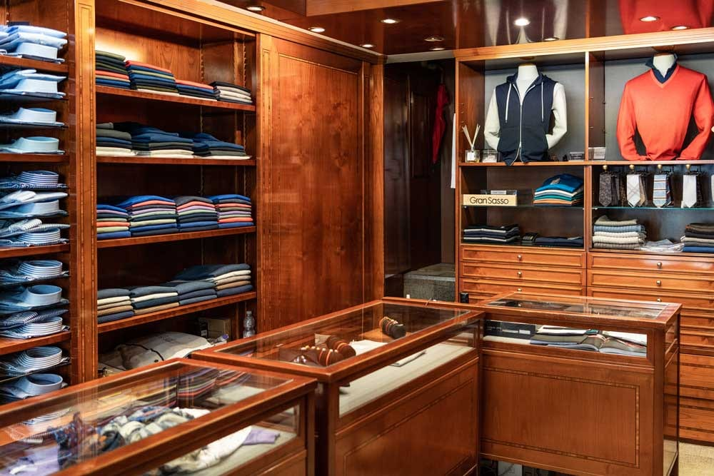
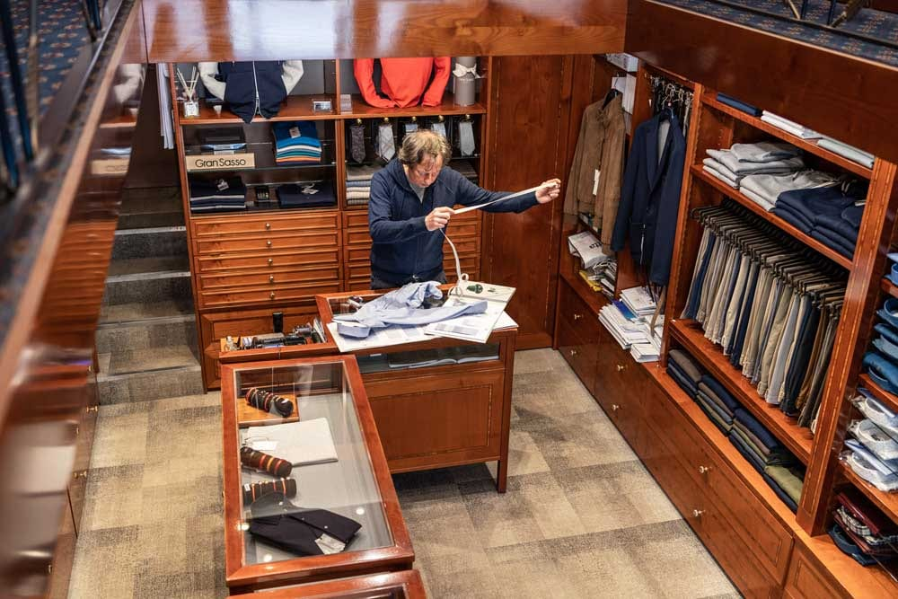
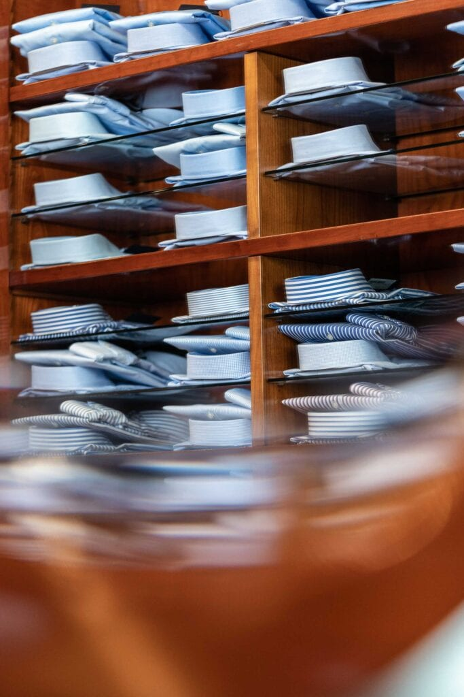
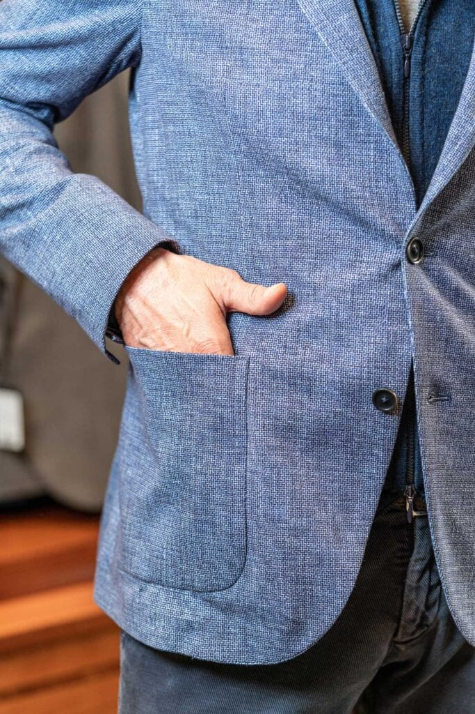
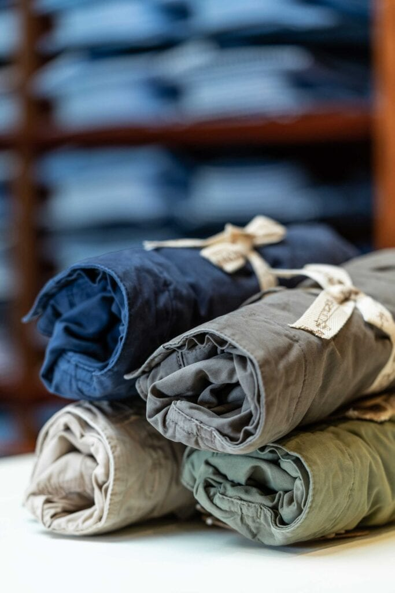

Corso Vercelli 11 · Milano · dal 1938
Stile a misura d'uomo.
Abbigliamento maschile e sartoria su misura in Corso Vercelli — tre generazioni, la stessa passione dal 1938.

La bottega
Non un negozio. Una bottega.
«Non solo un negozio, ma una vera e propria bottega dove realizziamo capi su misura con la stessa passione di una volta ma uno stile moderno e unico.» Da tre generazioni, la stessa famiglia dietro lo stesso bancone.
«Negozio storico di Milano. Ci andavano già i miei genitori quando ero bambino e c'erano i signori De Molfetta.»
Su misura
Profumo di sartorialità a ogni orlo
- I
Il tessuto
Un'ampia selezione di tessuti di prima qualità: si sceglie insieme, come si sceglie una stagione.
- II
Il metro
Le misure prese addosso, una per una. Il capo nasce sul cliente, non su una taglia.
- III
L'orlo
La rifinitura fatta a mano, con la pazienza di una volta. Il profumo di sartorialità è tutto qui.
Il guardaroba
Non solo su misura: il meglio del Made in Italy



Ci andavano già i vostri genitori: la scelta di sempre, con l'occhio di oggi.
Dicono di noi
4,9 ★ «5 stelle sono anche poche»
«Ho comprato una camicia, scambiai due chiacchiere con il titolare, e furono quelle due chiacchiere a convincermi: passione e professionalità oltre a cortesia e gentilezza.»
Nicola
«Vasta scelta di modelli da uomo di qualità e stile, disponibilità e simpatia del personale. Non si esce mai senza aver comprato qualcosa di carino. Ottima qualità e giusti prezzi.»
Eva · Local Guide
«Negozio storico di Milano. Ci andavano già i miei genitori quando ero bambino e c'erano i signori De Molfetta.»
Mario
«Professionali, cordiali, ottimi prodotti con altissimo rapporto qualità/prezzo. 5 stelle sono anche poche per una bottega di tale portata.»
Google
Dove & quando
In Corso Vercelli, dal 1938
Corso Vercelli 11, 20144 Milano · angolo Largo Settimio Severo
…
| Lunedì | 15:00 – 19:30 |
| Martedì | 10:00 – 13:30 · 15:00 – 19:30 |
| Mercoledì | 10:00 – 13:30 · 15:00 – 19:30 |
| Giovedì | 10:00 – 13:30 · 15:00 – 19:30 |
| Venerdì | 10:00 – 13:30 · 15:00 – 19:30 |
| Sabato | 10:00 – 13:30 · 15:00 – 19:30 |
| Domenica | Chiuso |
Domande frequenti
Fate capi su misura?
Sì: da tre generazioni realizziamo capi su misura con un'ampia selezione di tessuti di prima qualità, con la stessa passione di una volta e uno stile moderno.
Cosa vendete oltre al su misura?
Un guardaroba maschile completo: camicie, giacche, maglieria, pantaloni e accessori dei migliori marchi del Made in Italy.
Da quanto tempo esistete?
Dal 1938: siamo una bottega storica di Milano, in Corso Vercelli, portata avanti dalla stessa famiglia da tre generazioni.
Che orari fate?
Lunedì 15–19:30; da martedì a sabato 10–13:30 e 15–19:30. Domenica chiuso.
Dove siete?
In Corso Vercelli 11 a Milano, angolo Largo Settimio Severo.